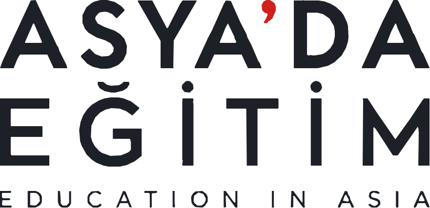
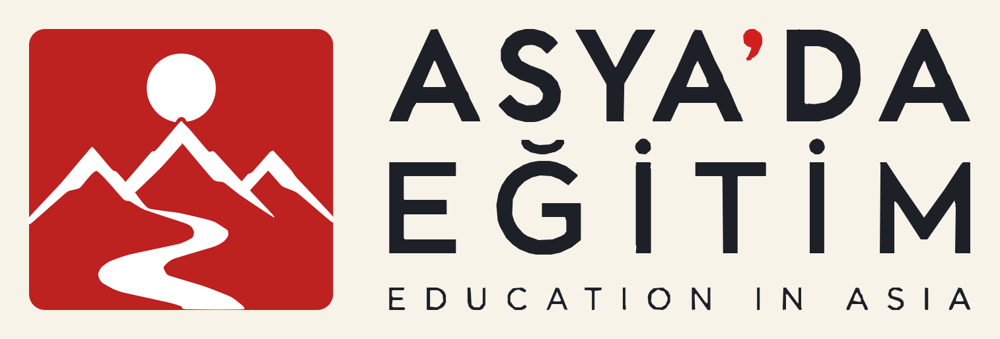
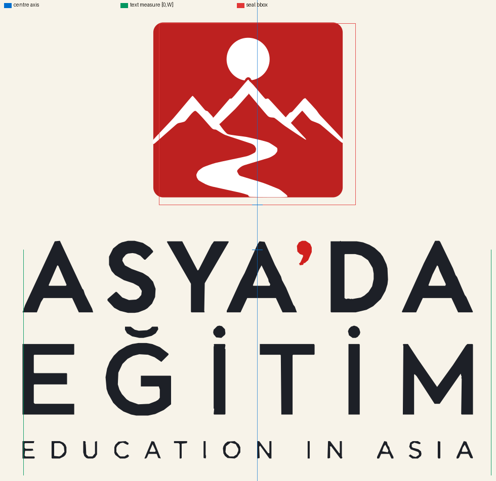
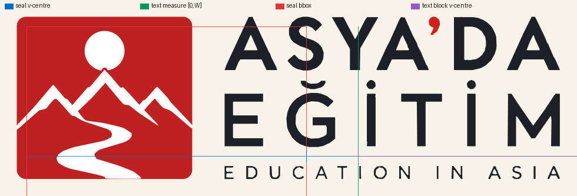
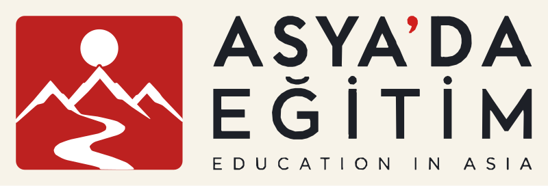
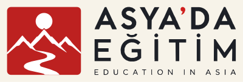
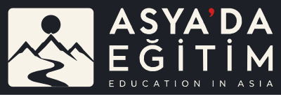

Birleşik geometri — wordmark + kilit
Asya'da Eğitim · iki insan gereksinimi: mühür ile wordmark hassas hizalı, üç metin satırı tek ölçü
Başlangıç: W3 harf yeniden kurgusu. Değişen yalnızca düzen geometrisi.
Kalite kapısı
—
29 kontrolün tamamı
| Kontrol | Ölçüm |
|---|
Wordmark

ASYA’DA · EĞİTİM · EDUCATION IN ASIA — üçü de tek ölçü W
| Satır | Mürekkep sol | Mürekkep sağ | Genişlik | Sapma L | Sapma R | Sonuç |
|---|---|---|---|---|---|---|
| ASYA’DA | 0.00 | 879.68 | 880.12 | 0.00 | 0.32 | GEÇTİ |
| EĞİTİM | 0.00 | 879.68 | 880.12 | 0.00 | 0.32 | GEÇTİ |
| EDUCATION IN ASIA | 0.00 | 879.68 | 880.12 | 0.00 | 0.32 | GEÇTİ |
Adım 1 — ortak metin ölçüsü nasıl sağlandı
Harfler rijit cisimler olarak yerleştirildi: yalnızca harf arası boşluklar satır başına tek bir sabit değer kadar değişti. Hiçbir kelime veya harf gerildi — hiçbir kontur noktası yer değiştirmedi, sadece harflerin x ofsetleri.
| Satır | Doğal ölçü | Hedef W | Fark | Boşluk sayısı | Boşluk başına |
|---|---|---|---|---|---|
| ASYA’DA | 881 | 881 | 0 | 5 | 0.00 px |
| EĞİTİM | 865 | 881 | +16 | 5 | +3.20 px |
| EDUCATION IN ASIA | 856 | 881 | +25 | 14 | +1.79 px |
EĞİTİM'in boşlukları +3.20 px, İngilizce satırınki +1.79 px genişletildi — bu harf aralığı ayarıdır, harf boyutu değil. Sağ kenar artığı her satırda tam olarak 0.000 px.
Adım 2 — dikey kilit
dikey (stacked) — kılavuzsuz

yatay (horizontal) — kılavuzsuz
Dikey kilit — hizalama kılavuzlarıyla

mavi: optik merkez ekseni · yeşil: metin ölçüsü [0,W] · kırmızı: mühür sınır kutusu

yatay (horizontal) — kılavuzlu
| Ölçüm | Sapma (px) |
|---|---|
| mühür sol/sağ/üst/alt | 0.46 / 0.94 / 0.46 / 0.48 |
| metin sol/sağ/üst/alt | 0.75 / 1.40 / 0.46 / 0.48 |
| mühür–metin açıklığı | 85.19 px (hedef 85, hata +0.19) |
| dikey merkez hizası | 0.00 px |
Dikey kilit ölçümleri
| Ölçüm | Sapma (px) |
|---|---|
| mühür sol/sağ/üst/alt | 0.29 / 0.25 / 0.37 / 0.23 |
| metin sol/sağ/üst/alt | 0.37 / 1.06 / 0.28 / 0.37 |
| mühür–metin açıklığı | 84.49 px (hedef 85, hata −0.51) |
| optik merkez ekseni sapması | 0.69 px (mühür ekseni ↔ metin ekseni) |
Adım 3 — küçültülmüş önizlemeler





Tüm önizlemeler gerçek kanonik SVG'den üretildi — mühür yeniden çizilmedi, hiçbir yerde yeniden oluşturulmadı.
Adım 4 — kalite kapısı
Kapı ölçütleri ve sonuç
| FAIL koşulu | Ölçülen | Sonuç |
|---|---|---|
| Herhangi bir metin satırı ortak ölçüden çıkıyor | en kötü 0.32 px (tolerans 1.0) | GEÇTİ |
| Mühür ile wordmark hizasız | merkez 0.69 px / 0.00 px | GEÇTİ |
| Glifler görünür biçimde bozulmuş | rijit cisim; gerilme yok | GEÇTİ |
| Türkçe diyakritikleri bozulmuş | Ğ breve + 2 İ noktası; 0 orphan | GEÇTİ |
| Logo geometrisi değişmiş | SHA-256 aynı; 3/3 bayt birebir | GEÇTİ |
Toplam: 29 kontrol · 29 geçti · 0 başarısız → KAPI GEÇTİ. Referans IoU bu gereksinimlerin hiçbiri için optimize edilmedi.
Ölçüm sırasında yakalanan hatalar
Her biri doğru görünen ama yanlış bir sayı üretti:
- Kağıt mürekkep sayıldı.
#F7F3E9L kanalında 243'e çevriliyor;<250eşiği tüm arka planı mürekkep sayıyor ve her kilit ölçümü tuval boyutuna çöküyordu - Mühür ekseni 44 px kayık. Dikey kilitte mühür tuvalin ortasına değil, metin ölçüsünün ortasına (PAD + W/2) hizalanmalı
- Ayrım noktası bir mühür yüksekliği kadar yanlıştı. "İlk boş satır" araması mührün iç boşluğuna (D kasesi) takılıp metin bandını bir mühür boyu kırpıyordu; her metin kenarı ~87 px yanlış okunuyordu
- Koordinat çerçevesi karışmış. Ölçüm belge koordinatlarında, karşılaştırma eski bir çerçevede yapılıyordu; ~87 px sabit hata
- Sayaçlar doluydu. W3'ün tüm-maske izlemesi delikleri doldurmuştu: D kasesi, A üçgeni, O ve G koyu çıktı. Bileşen bazlı RETR_CCOMP + evenodd ile geri açıldı
- Sayaç probu tek yanlış piksel okudu. D kasesi x=700'de gövde; sayacın kendisi iki gövde arasındaki aydınlık aralık. Aralıkla prob etmek gerekiyordu
Kilitli mühür
canonical_logo_sha256 8f5d46f0302c4cc7e3765d3bfce9445f842dbd92f1e0f8fbe99f9f509c77e11a
Her üç kilitte mühür yol verisi ve dikdörtgen geometrisi kilitli dosyayla bayt bayt karşılaştırıldı: 0 sapma. Yalnızca konum, ölçek ve onaylı mono-paper renk varyantı değişti.